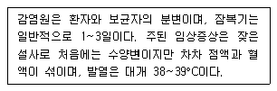
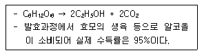

식품기사 (2017-05-07 기출문제)
1과목: 식품위생학
1. 정수시설의 침전지에서 약품침전의 목적으로 사용하는 것은?
- 명반
- 붕산
- 염소
- 표백분
(정답률: 72%)

2. 어떤 식품을 먹기 직전에 끓였는데도 식중독사고가 일어 났다. 만약 세균성 식중독이라면 그 추정 원인 세균은?
- 살모넬라균
- 비브리오균
- 황색 포도상구균
- 여시니아 엔테로콜리티카균
(정답률: 78%)
3. 장기보존식품의 기준 및 규격에서 저산성 식품과 산성 식품을 구분하는 기준은?
- pH 5 초과 시 저산성식품, pH 5이하 시 산성식품
- pH 4.6 초과 시 저산성식품, pH 4.6 이하 시 산성식품
- 산도 10% 이하 시 산성식품, 산도 10% 초과 시 저산성식품
- 산도 20% 이하 시 산성식품, 산도 20% 초과 시 저산성식품
(정답률: 82%)
4. 합성수지 포장재에서 용출될 수 있는 내분비교란물질은?
- dioctyl phthalate
- polyvinyl alcohol
- silicon
- polyethylene
(정답률: 54%)
5. 가공식품의 경로를 ““생산, 수입, 제조가공, 유통, 소비””의 단계로 구분할 때 제조가공, 유통, 소비단계와 관련된 법령이 아닌 것은?
- 양곡관리법
- 식품위생법
- 건강기능식품에 관한 법률
- 어린이 식생활 안전관리 특별법
(정답률: 67%)
6. 다음 중 유해성 식품첨가물이 아닌 것은?
- cyclamate
- P - nitro-o-toluidine
- dylcin
- D-sorbitol
(정답률: 90%)
7. 미량으로 발암이나 만성중독을 유발시키는 화학물질 중 상수원 물의 오염이 문제가 되는 것은?
- 아질산염(N-nitrosamine)
- 메틸알코올(methyl alcohol)
- 트리할로메탄(trihalomethane, THM)
- 이환방향족아민류(heterocylic amines)
(정답률: 85%)
8. ““이타이 이타이병”” 과 관계 깊은 금속은?
- 수은
- 아연
- 납
- 카드뮴
(정답률: 87%)
9. 기구 및 용기.포장의 기준 및 규격으로 틀린 것은?
- 기구 및 용기포장은 물리적 또는 화학적으로 내용물이 오염되기 쉬운 구조이어서는 아니된다.
- 전류를 직접 식품에 통하게 하는 장치를 가진 기구의 전극은 철, 알루미늄, 백금, 티타늄 및 스테인리스 이외의 금속을 사용하여서는 아니된다.
- 식품과 접촉하는 면에 인쇄할 때에는 인쇄 후 잔류 톨루엔의 함량이 5mg/m2 이하이어야 한다.
- 랩 제조 시에는 디에틸헥실아디페이트(DEHA)를 사용하여서는 아니된다. 다만, 용출되어 식품에 혼입될 우려가 없는 경우는 제외한다.
(정답률: 76%)
10. 바다생선회를 원인식으로 발생한 식중독 환자를 조사한 결과 기생충의 자충이 원인이라면 관련 깊은 것은?
- 선모충
- 동야모양선충
- 간흡충
- 아니사키스충
(정답률: 84%)
11. 식품 중의 acrylamide에 대한 설명으로 틀린 것은?
- 반응성이 높은 물질이다.
- 탄수화물이 많은 식물성 식품보다는 단백질이 많은 동물성 식품에서 많이 발견된다.
- 신경계통에 이상을 일으킬 수 있다.
- 식품을 삶아서 가공하는 경우에는 생성되는 양이 적다.
(정답률: 69%)
12. 아래에서 설명하는 경구감염병은?

- 콜레라
- 장티푸스
- 유행성 간염
- 세균성 이질
(정답률: 59%)
13. 다음 중 수용성인 산화방지제는?
- Ascorbic acid
- Butylated hydroxyl anisole(BHA)
- Butylated hydroxyl toluene(BHT)
- Propyl allate
(정답률: 88%)
14. 인수공통감염병에 대한 설명 중 틀린 것은?
- 질병의 원인은 모두 세균이다.
- 원인 세균 중에는 포자(spore)를 형성하는 세균도 있다.
- 약독생균을 예방수단으로 쓰기도 한다.
- 접촉감염, 경구감염 등이 있다.
(정답률: 87%)
15. 발색제에 대한 설명으로 틀린 것은?
- 염지 시 사용되는 식품첨가물이다.
- 발색뿐만 아니라 육제품의 보존성이나 특유의 향미를 부여하는 효과를 나타낸다.
- 보툴리스균 등의 일반 세균의 생육에는 영향을 미치지 않고 곰팡이의 생육을 저해한다.
- 강한 산화력을 나타내어 메트미오글로빈혈증을 일으키는 등 급성독성을 갖고 있다.
(정답률: 67%)
16. 미생물의 살균이나 소독방법 중 화학적 방법은?
- 여과
- 가열
- 소독약
- 자외선
(정답률: 88%)
17. 식품의 ““1회 섭취참고량””은 몇 세 이상으로 설정한 값인가?
- 만 3세 이상
- 만 5세 이상
- 만 13세 이상
- 만 18세 이상
(정답률: 62%)
18. 공장폐수에 포함된 수은이 환경수를 오염시켜 식품오염으로 연결된다. 이와 관련된 설명으로 틀린 것은?
- 무기수은은 세균에 의하여 메틸수은이 된다.
- 생체내에서 무기수은은 유기수은으로 변하지 않는다.
- 유기수은은 무기수은보다 생체 축적성이 크다.
- 머리카락중의 총 수은량으로 메틸수은 중독을 진단하는 기준으로 쓸 수 있다.
(정답률: 72%)
19. 건강기능식품에서 원료 중에 함유되어 있는 화학적으로 규명된 성분 중에서 품질관리의 목적으로 정한 성분은?
- 지표성분
- 기능성분
- 정제성분
- 합성성분
(정답률: 74%)
20. 식품의 조사(food irradiation)시 사용할 수 있는 것은?
- 60Co의 감마선
- 137Cs의 감마선
- 90Sr의 베타선
- 131I의 베타선
(정답률: 86%)
2과목: 식품화학
21. 외부의 힘에 의하여 변형된 물체가 그 힘을 제거하여도 원상태로 되돌아가지 않는 성질은?
- 점조성
- 탄성
- 소성
- 점탄성
(정답률: 85%)
22. 유지의 녹는점(Melting point)의 설명으로 옳은 것은?
- 불포화지방산 함량이 많을수록 녹는 점이 높다.
- 일반적인 식물성 유지는 상온에서 고체이다.
- 동물성 유지는 식물성 유지보다 녹는점이 높다.
- 유지는 구성 지방산의 종류에 상관없이 녹는점이 일정하다.
(정답률: 70%)
23. 다음 중 지방산을 자동산화 시킬 때 산화속도가 가장 빠른 것은?
- 팔미틴산(palmitic acid)
- 올레인산(oleic acid)
- 리놀렌산(linolenic acid)
- 팔미토레인산(palmitoleic acid)
(정답률: 72%)
24. 코코아 및 초콜릿의 쓴맛성분은?
- quercetin
- naringin
- theobromine
- cucurbitacin
(정답률: 69%)
25. 에르고스테롤이 자외선을 받으면 활성화되는 비타민의 기능에 대한 설명으로 틀린 것은?
- 혈액이 응고되는 중요한 인자가 된다.
- 이것이 부족하면 골다공증을 유발하기도 한다.
- 인(P)의 흡수 및 침착을 도와 준다.
- 뼈의 석회화를 도와주는 역할을 한다.
(정답률: 66%)
26. 고체식품에서 항복응력(yield stress)을 초과할 때까지 영구변형이 일어나지 않는 것은?
- 탄성체
- 가소성체
- 점탄성체
- 완형체
(정답률: 66%)
27. 다음 중 provitamin A가 아닌 것은?
- cryptoxanthin
- ergosterol
- myxoxanthin
- β-carotene
(정답률: 71%)
28. 달걀을 가공하면서 일어나는 화학적 변화에 대한 설명으로 틀린 것은?
- 달걀 음료 제조 시 가열 살균에 의하여 응고되는 것을 방지하기 위해 파파인을 첨가하면 효과적이다.
- 마요네즈 제조 시 식초는 미생물에 의한 변화를 최소화 시키거나 유화가 완전하지 못하면 저장 중 분리 현상이 일어난다.
- 동결란 제조를 위해 난백을 -30~-20°C 조건에서 신속하게 동결시키면 미생물이 멸균되므로 별도의 살균처리는 하지 않아도 된다.
- 난황의 유화능은 친수성기와 소수성기가 뚜렷하게 구분되어 있어 계면활성제로서의 역할을 충분히 한다.
(정답률: 80%)
29. 일정한 전단속도일 때 시간이 경과함에 따라 외관상 점도가 증가하는 유체는?
- dilatant 유체
- pseudoplastic 유체
- thixotropic 유체
- rheopectic 유체
(정답률: 50%)
30. 즉석밥 제조 시 밥맛이 좋고 영양가가 높은 제품을 만들기 위한 방법이 아닌 것은?
- 도정을 미리 해둔 쌀을 이용하지 않고 밥을 짓기 2~3일전에 도정한 쌀을 이용하여 밥을 만든다.
- 쌀을 보관함에 있어 수분과 온도가 매우 중요하므로 수분함량 16%와 온도 20°C를 유지하여 저장하는 것이 바람직하다.
- 0분도정을 실시하면 현미를 확보할 수 있으나 밥맛에 영향을 주고, 10분도정을 하면 하얀 백미를 확보할 수 있으나 영양 손실이 우려되어 7~9분 정도 도정을 실시하는 것이 좋다.
- 해충의 침투를 차단하고 곡류의 수분을 13%이하로 유지하며 적정 온도 조건을 유지 하도록 한다.
(정답률: 72%)
31. 식품의 산성 및 알칼리성에 대한 설명 중 틀린 것은?(오류 신고가 접수된 문제입니다. 반드시 정답과 해설을 확인하시기 바랍니다.)
- 알칼리생성원소와 산생성원소 중 어느 쪽의 성질이 큰가에 따라 알칼리성식품과 산성식품으로 나뉜다.
- 식품이 체내에서 소화 및 흡수되어 Na, K, Ca, Mg 등의 원소보다 많은 경우를 생리적 산성식품이라 한다.
- 산성식품을 너무 지나치게 섭취하면 혈액은 산성 쪽으로 기울어 버린다.
- 대표적인 생리적 알칼리성 식품은 과실류, 해조류및 감자류이다.
(정답률: 65%)
32. 냄새성분과 특성의 연결이 틀린 것은?
- 알데히드류(aldehyde) - 식물의 풋내, 유지 식품의 기름진 풍미 및 산패취
- 에스테르류(ester) - 과일과 꽃의 중요한 향기성분
- TMAO(trimethylamine oxide) - 생선 비린내 성분
- 피라진류(pyrazines) - 질소를 함유한 화합물로, 고기향, 땅콩향, 볶음향 등의 특성을 나타내는 성분
(정답률: 59%)
33. 5°C의 물 1g이 -5°C의 얼음으로 되기 위해서는 얼마만큼의 열량을 빼앗아야 하는가? (단, 물의 비열은 1cal/°C/g이고 얼음의 비열은0.5cal/°C/g 라고 한다.)
- 7.5 cal
- 10 cal
- 15 cal
- 87.5 cal
(정답률: 42%)
34. 30°C 포도당 수용액에서 포도당의 평형 혼합물에 대한 설명으로 옳은 것은?
- 베타-D-glucofuranose형태가 가장 많이 존재한다.
- 알파-D-glucopyranose형태가 가장 많이 존재한다.
- 열린사슬 aldehyde형태가 가장 많이 존재한다.
- 베타-D-glucopyranose형태가 가장 많이 존재한다.
(정답률: 54%)
35. 관능검사 중 흔히 사용되는 척도의 종류가 아닌 것은?
- 명목 척도
- 서수 척도
- 비율 척도
- 지수 척도
(정답률: 55%)
36. 돼지고기 2g을 Kheldah1법으로 분석하였더니 질소함량이 60mg이었다 돼지고기의 조단백질 함량은 약 몇 %인가?
- 17.2
- 18.8
- 20.0
- 21.4
(정답률: 58%)
37. NaOH의 분자량이 40일 때 NaOH 30g의 몰 수는?
- 0.65
- 10
- 1.33
- 0.75
(정답률: 73%)
38. 유지의 경화란 무엇인가?
- 수증기 증류를 통하여 포화지방신함량을 증가 시키는 것이다.
- 유지를 가열 건조시켜 굳게 만드는 것이다.
- 촉매등을 이용하여 포화지방산의 경도를 단단하게 하는 것이다.
- 불포화지방산에 수소를 첨가하는 것이다.
(정답률: 79%)
39. 우유 특유의 향기성분이 아닌 것은?
- acetone
- acetaldehyde
- butyric acid
- oleic acid
(정답률: 58%)
40. 다음 중 단백질의 아미노산 구성원소는?
- C, H, O, S, P
- C, H, O, N, P
- C, H, O, N, K
- C, H, O, N, S
(정답률: 71%)
3과목: 식품가공학
41. 김치의 초기 발효에 관여하는 저온숙성의 주 발효균은?
- Leuconnostoc mesenteroides
- Lactobacillus plantarum
- Bacillus macerans
- Pediococcus cerevisiae
(정답률: 74%)
42. 과실주스 제조에 이용되는 효소에 해당되지 않는 것은?
- 셀룰라아제(cellulase)
- 팩틴분해효소(pectinase)
- 리폭시지나아제(lipoxygenase)
- 단백질분해효소(protease)
(정답률: 61%)
43. 우유의 초고온순간처리법(UHT)으로서 가장 알맞은 조건은?
- 121°C에서 0.5~4초 가열
- 121°C에서 5~9초 가열
- 130~150°C에서 0.5~4초 가열
- 130~150°C에서 4~9분 가열
(정답률: 77%)
44. 아미노산 제조 방법이 아닌 것은?
- 합성법
- 단백질 분해법
- 발효법
- 추출법
(정답률: 39%)
45. 달걀중의 콜레스테롤 함량을 낮추는 방법으로 부적합한 것은?
- 난황으로부터 콜레스테롤을 용매 추출한다.
- 사료의 배합을 조절하여 계란에 콜레스테롤 함량이 낮도록 한다.
- 달걀을 살균가열처리 한다.
- 난백과 난황을 분리하여 난황에 있는 지방을 제거한다.
(정답률: 81%)
46. 수산 건제품의 처리 방법에 대한 설명으로 틀린 것은?
- 자건품 : 수산물을 그대로 또는 소금을 넣고 삶은 후 말린 것
- 배건품 : 수산물을 저온에서 말린 것
- 염건품 : 수산물에 소금을 넣고 말린 것
- 동건품 : 수산물을 동결.융해하여 말린 것
(정답률: 72%)
47. 알루미늄박(AL-foil)에 폴리에틸렌 필름을 입혀서 사용하는 가장 큰 목적은?
- 산소나 가스의 차단
- 내유성 향상
- 빛의 차단
- 열접착성 향상
(정답률: 62%)
48. 다음 중 요오드가의 구분에 따라 불건성유로 분류되는 것은?
- 대두유
- 면실유
- 채종유
- 야자유
(정답률: 49%)
49. 5°C에서 저장중인 양배추 5000kg의 호흡열 방출에 의한 냉동부하는? (단, 5°C에서 양배추의 저장시 열방출량은 63W/ton이다.)
- 315kJ/h
- 454kJ/h
- 778kJ/h
- 1134kJ/h
(정답률: 37%)
50. 동결진공 건조법의 공정에 속하지 않는 것은?
- 식품의 동결
- 건조실내의 감압
- 승화열의 공급
- 건조실내에 수증기의 송입
(정답률: 67%)
51. 옥수수 전분 제조 시 전분 분리를 위해 사용하는 것은?
- HCOOH
- H2SO3
- HCL
- HOOC-COOH
(정답률: 67%)
52. 곡물 저온저장의 특성으로 옳지 않은 것은?
- 도정한 쌀의 맛이 좋다.
- 발야율의 변화가 적다.
- 훈증할 필요가 없다.
- 현미의 도정 효과가 낮다.
(정답률: 63%)
53. 제분 시 자력 분리기로 이물을 제거하는 공정 단계는?
- 운반
- 정선
- 세척
- 탈수
(정답률: 76%)
54. 샐러드기름을 제조할 때 저온 처리하여 고체 유지를 제거하는 조작을 무엇이라 하는가?
- 탈검(degumming)
- 정치(standing)
- 경화(hardening)
- 탈납(winterization)
(정답률: 57%)
55. 햄(ham) 제조에 대한 설명으로 틀린 것은?
- 염지방법은 건염법, 액염법, 염지액주사법 등이 있다.
- 염지는 15°C 정도에서 하는 것이 효과적이다.
- 훈연은 향미, 색깔, 보존성을 증진한다.
- 훈연방법은 냉훈법, 온훈법 등이 있다.
(정답률: 77%)
56. 어류의 비린 맛에 대한 설명으로 옳은 것은?
- 생선이 죽으면 트리메탈아민옥시드가 트리메탈아민으로 변하여 생선 비린내가 난다.
- 생선이 죽으면 트리메틸아민이 트리메틸아민옥시드로 변하여 생선 비린내가 난다.
- 생선비린내 성분은 특히 담수어에 많이 함유된다.
- 생선 비린내는 주로 관능검사법으로 품질관리한다.
(정답률: 72%)
57. 열전도도가 0.7W/m∙인 벽돌로 된 두께 15cm의 외부벽과 208W/m∙의 열전도도를 갖는 15mm의 알루미늄판으로 된 창고가 있을 때 이 창고의 U(총괄전열계수)값은 약 얼마인가?(단, 창고 안팎의 표면 열전달계수는 각각 12와 25W/m2·K이다.)
- 0.45W/m2
- 1.42W/m2
- 1.96W/m2
- 2.97W/m2
(정답률: 30%)
58. 미생물 살균 목적으로 방사선 조사에 가장 널리 활용되는 방사선은?
- γ 선
- α 선
- β 선
- X 선
(정답률: 82%)
59. 장류의 식품유형이 아닌 것은?
- 고추장
- 산분해간장
- 발효식초
- 개량메주
(정답률: 74%)
60. 분유의 품질에 관여하는 지표가 아닌 것은?
- 기포성
- 용해도
- 보존성
- 입자의 크기
(정답률: 66%)
4과목: 식품미생물학
61. 대장균(Escherchia coli)의 특성에 대한 설명으로 틀린 것은?
- Gram 음성균이다..
- 편성 혐기성균이다.
- 유당을 분해하여 CO2와H2 가스를 생산한다.
- 식품위생 지표 세균이다.
(정답률: 68%)
62. 젖산균을 당 발효 양상에 따라 구분 할 때 이형발효(heterofermentation)균에 해당하는 것은?
- Enterococcus 속
- Lactococcus 속
- Leuconostoc 속
- Streptococcus 속
(정답률: 53%)
63. 다음 세포의 구조 중 유성적인 접합과정에서 DNA의 이동 통로 또는 다른 물체에 부착하는 역할을 하는 것은?
- 편모(flagella)
- 선모(pili)
- 세포막(cell membrane)
- 세포벽(cell wall)
(정답률: 69%)
64. 효모와 곰팡이에 관한 설명으로 틀린 것은?
- 효모와 곰팡이는 세균 세포보다 크다.
- 약산성에서 잘 자란다.
- 원핵세포로 된 하등 미생물이다.
- 효모는 곰팡이보다 혐기적인 조건에서 성장하는 종류가 많다.
(정답률: 62%)
65. 다음 세균들의 속 중 Enterobacteriaceae과에 속하지 않는 것은?
- Escherchia 속
- Klebsiella 속
- Pseudomonas 속
- Shigella 속
(정답률: 40%)
66. 홍조류(red algae)에 속하는 것은?
- 미역
- 다시마
- 김
- 클로렐라
(정답률: 78%)
67. 곰팡이의 유성포자에 해당되지 않는 것은?
- 분생포자
- 접합포자
- 난포자
- 담자포자
(정답률: 58%)
68. 세포들 사이에 유전물질이 전달되는 기작 중에서 세포와 세포가 접촉하여 한 세균에서 다른 세균으로 유전물질인 DNA가 전달되는 기작은?
- 접합
- 전사
- 형질도입
- 형질전환
(정답률: 54%)
69. 분열법으로 증식하는 효모류는?
- Saccharomyces 속
- Schizosaccharomyces 속
- Kloeckera 속
- Candida 속
(정답률: 52%)
70. 다음 중 그람 염색 특성이 다른 세균과 다른 것은?
- Lactobacillus 속
- Staphylococcus 속
- Escherchia 속
- Bacillus 속
(정답률: 51%)
71. 그람 양성 세균의 세포벽이 음성의 극성을 갖는데 관여하는 물질은?
- 펩티도글라이칸
- 포린
- 인지질
- 테이코산
(정답률: 55%)
72. 잠재적 발암활성도를 측정하는 Ames test에서 이용하는 돌연변이는?
- 역돌연변이
- 불변돌연변이
- 불인식돌연변이
- 틀변환(격자이동)돌연변이
(정답률: 54%)
73. 주정공업에서 glucose 1 ton을 발효시켜 얻을 수 있는 에탄올의 이론적 수량은?
- 180kg
- 511kg
- 244kg
- 711kg
(정답률: 62%)
74. 다음 중에서 용원성 파아지(phage)의 특성이 아닌 것은?
- 숙주 세포의 염색체에 결합하여 prophage가 된다.
- 세균의 증식에 따라 분열한 세균세포로 유전된다.
- 세균 세포벽을 용해시켜 유리파아지가 된다.
- 숙주 세포 내에서 새로운 DNA나 단백질을 합성하지 않는다.
(정답률: 41%)
75. 다음 중 편성 혐기성균에 속하는 균은?
- Escherchia coli
- Lactobacillus acidophilus
- Staphylococcus aureus
- Clostridium botulinum
(정답률: 66%)
76. 담자균류의 특징과 관계가 없는 것은?
- 담자기
- 경자
- 정낭
- 취상돌기
(정답률: 53%)
77. Glucose 대사 중 NADPH가 주로 생성되는 경로는?
- EMP경로
- HMP경로
- TCA회로
- Glyoxylate회로
(정답률: 51%)
78. 미생물의 영양원에 대한 설명으로 틀린 것은?
- 종속영양균은 탄소원으로 주로 탄수화물을 이용하지만 그 종류는 균종에 따라 다르다.
- 유기태 질소원으로 요소, 아미노산 등은 효모, 곰팡이, 세균에 의하여 잘 이용된다.
- 무기염류는 미생물의 세포 구성성분, 세포 내삼투압 조절 또는 효소활성 등에 필요하다.
- 생육인자는 미생물의 종류와 관계없이 일정하다.
(정답률: 79%)
79. 다음 중 세균의 회분배양 시 가장 급격하게 균수 증가가 일어나는 단계는?
- 유도기
- 대수기
- 정지기
- 사멸기
(정답률: 81%)
80. 하면발효 맥주효모에 해당되는 것은?
- Saccharomyces cerevisiae
- Saccharomyces carlsbergensis
- Saccharomyces sake
- Saccharomyces coreanus
(정답률: 76%)
5과목: 생화학 및 발효학
81. 화학종속영양균의 배양 시 미생물의 생장속도에 영향을 끼치는 인자가 아닌 것은?
- pH
- 산소
- 접종균량
- 빛
(정답률: 61%)
82. 유가배양(fed-batch culture)법을 이용하는공업적 배양공정에 의해 생성되는 산물이 아닌 것은?
- 빵효모
- 식초
- 항생물질
- 구연산
(정답률: 37%)
83. 진핵세포 내에서 전자전달 연쇄반응에 의한 생물학적 산화과정이 일어나는 곳은?
- 리보솜
- 미토콘드리아
- 세포막
- 세포질
(정답률: 72%)
84. TCA 회로(tricarboxylic aicd cycle)에서 생성되는 유기산이 아닌 것은?
- Citric acid
- Lactic acid
- Succinic acid
- Malic acid
(정답률: 64%)
85. 과당(fructose)을 구성단위로 하는 다당류는?
- 전분
- 글리코겐
- 이눌린
- 셀룰로오스
(정답률: 68%)
86. DNA 이중나선구조의 안정화와 관계 있는 결합은?
- 이웃한 퓨린 염기 사이의 공유결합
- 이웃한 피리미딘 염기사이의 이온 결합
- 퓨린과 피리미딘 염기 사이의 수소결합
- 겹쳐 쌓인 퓨린과 피리미딘 핵 사이의 소수성결합
(정답률: 76%)
87. 효모에 의한 알코올 발효의 반응식과 조건이 아래와 같을 때 포도당 1kg으로부터 생산되는 알코올의 양은?

- 약 440g
- 약 460g
- 약 486g
- 약 511g
(정답률: 47%)
88. Aspergillus oryzae를 청주용 국균으로 사용할 때 갖추어야 할 종균의 특성이 아닌 것은?
- 당화효소(amylase)가 강력할 것
- 단백질분해효소(protase)가 강력할 것
- 짙은 색을 생성하지 않을 것
- 좋은 향미가 있을 것
(정답률: 56%)
89. RNA 분해법으로 핵산 조미료를 생산할 때 RNA 원료로 사용되는 미생물은?
- Aspergillus niger 등의 곰팡이
- Bacillus subtilis 등의 세균
- Candida utilis 등의 효모
- Streptomyces griceus 등의 방선균
(정답률: 49%)
90. 맥주 제조 시 후발효의 목적과 관계없는 것은?
- 맥주의 고유색깔을 진하게 착색시킨다.
- 맥주의 혼탁물질을 침전시킨다.
- 저온에서 CO2를 필요한 만큼 맥주에 녹인다.
- 여분의 CO2를 방출시켜 young beer 특유의 향을 개선시킨다.
(정답률: 51%)
91. 『 Acetil-CoA → malonyl-CoA』에 관여하는 비타민으로 옳은 것은?
- Vitamin B1
- Vitamin C
- Vitamin D
- Biotin
(정답률: 59%)
92. 기질과 화학적 구조가 유사하여 효소의 활성부위에 직접 결합하는 저해제의 종류는?
- 기질적 저해제
- 경쟁적 저해제
- 비경쟁적 저해제
- 무경쟁적 저해제
(정답률: 66%)
93. 단백질을 순수하게 분리하는 방법이 아닌 것은?
- Ultracentrifugation
- Chromatography
- Electrophoresis
- Southern blot
(정답률: 53%)
94. 고구마 전분을 이용한 주정발효에 있어서 발효공정의 순서가 맞는 것은?
- 산당화 → 호정화 → 발효 → 증류
- 당밀희석 → 당화 → 발효 → 증류
- 산당화 → 호정화 → 증류 → 발효
- 증자 → 당화 → 발효 → 증류
(정답률: 53%)
95. DNA 분자를 구성하고 있는 성분들과 결합이 맞게 연결된 것은?
- 질소염기–디옥시리보오스–인산다이에스테르결합
- 질소염기–리보오스–인산에스테르결합
- 질소염기–디옥시리보오스–아마이드결합
- 질소염기–디옥시리보오스–글리코시드결합
(정답률: 69%)
96. 혐기적 조건에서 근육조직의 에너지 전달물질은?
- Phosphocreatine
- Oxaloacetate
- cAMP
- Phosphoenolpyruvate
(정답률: 46%)
97. 메주 만들기에 대한 설명으로 틀린 것은?
- 성형된 메주는 표면의 수분이 건조되기 전에 띄우기를 하여 곰팡이의 증식을 유도한다.
- 성형된 메주는 따뜻한 방에서 띄우게 되는데, 이때에 Bacillus 등이 증식하여 단백질분해효소 등이 생성된다.
- 성형된 메주는 건조공기로 3일 정도 표면을 건조시킨 후 35°Cdptj 7일 정도 발효시키고 실온에서 1개월 숙성시킴으로서 메주가 완성된다.
- 개량식 메주는 Aspergillus oryzae를 증자한 대두에 배양하여 상품화한 것이다.
(정답률: 49%)
98. Polypeptide 분자의 중간에 작용하여 peptide결합을 분해하는 효소는?
- Endopeptidase
- Aminopeptidase
- Exopeptidase
- Carboxypeptidase
(정답률: 55%)
99. 클로렐라에 관한 설명으로 틀린 것은?
- 햇빛을 에너지원으로 한다.
- 배양 시 질소원으로 요소를 사용한다.
- 탄소원으로 CO2를 사용하지 않는다.
- 균체는 식품으로서 영양가가 높다.
(정답률: 71%)
100. 인간의 장내 미생물에 의해 합성이 진행됨으로 일반적으로 결핍증세를 나타내지는 않지만, 달걀 흰자를 날것으로 함께 섭취 시 결핍증이 우려되는 비타민은?
- Biotin
- Pathothenic acid
- Folic acid
- Niacin
(정답률: 69%)